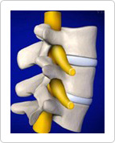
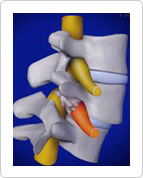
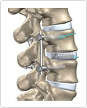

Cases for minimally invasive spine fixation surgery
- Patients who have suffered from chronic back painbecause of spondylolysis
- Patients who have nervous symptoms caused by spondylolisthesis
- Patients who have an instable spine
- Patients with chronic disc degeneration who have severe back pain
- 
Normal
- 
Spondylolysis

Spondylolisthesis
- 
Post-surgery